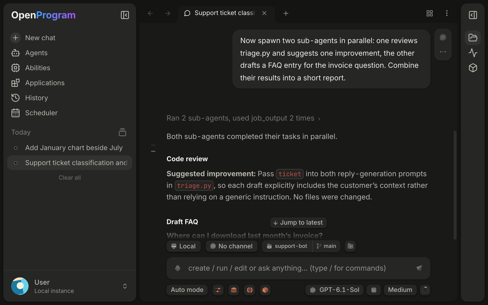

openprogram webhttp://localhost:18100: static UI, /api and /ws on one portopenprogram ports --port
| Route | Purpose |
|---|---|
/chat, /s/<session-id> | Chat; direct link to one session. Switching sessions keeps the page and WebSocket. |
/pending | Always-on Agent reports from all conversations: awaiting your decision, then new |
/agents | Create, configure, start conversations: model, abilities, memory, context |
/applications | Install from a local folder; open, enable, hide from the new tab page, update, uninstall |
/scheduler | One-time, recurring and monitor tasks and reminders, filtered by type, as a list or calendar; pause, resume, delete |
/chats, /history | Projects, home project first; each with Chats, Memory, Settings, Info tabs |
/memory | History on Memory: wiki, journal, core memories |
/projects | History on Chats; Settings holds per-project permission rules and defaults |
/programs | Abilities hub: Programs catalog with Tools and Applications roots (call tree, graph) |
/skills | Installed SKILL.md files, discover, create; detail pages |
/plugins | Installed, Discover (marketplace), Issues |
/mcp | Add from the directory, edit configs, per-server status |
/settings | Lands on /settings/general |
| Settings tab | Holds |
|---|---|
| General | Language, suggestions, user, notifications, runtime version, Desktop update status |
| Providers | Models, credentials, auth |
| Other tabs | Appearance, Memory, Search, Browser, Voice, Environments, Channels, Import, Usage, System, Versions |
| Width | Behavior |
|---|---|
| Up to 900px | Left sidebar starts as an icon rail and closes after navigating. The list column of History, Agents and Settings collapses to a rail. |
| Below 760px | Those columns start as rails and collapse on resize |
A choice you make yourself is kept.
| Item | Effect |
|---|---|
| Lists | Running version, the one OpenProgram returns to if that stops starting, versions kept here. Only on an install that updates itself in place; a fixed App or source checkout says it keeps none. |
| Go back | Returns to exactly that version, removing everything after it |
| Undo change | Removes only that change |
| Edits saved but not in use | Files changed by hand inside a running version. Apply edits asks the Agent to bring them into a new version. |
self_update, with no confirmation| Item | Detail |
|---|---|
| Open | ⌘K (Ctrl+K) anywhere except a terminal, which keeps it; again or Escape closes |
| Actions | New chat; Agents, Skills, Applications, Projects, History, Memory, Scheduler, Settings |
| Sessions | Up to 300 unarchived, most recent first, with last activity or Running. Selects an open tab if there is one. Matches title, latest message preview and project name, not message contents. |
| Key (Ctrl for Cmd on Windows, Linux) | Action |
|---|---|
| Cmd+N | New chat |
| Cmd+T, Cmd+W | New tab, close tab |
| Cmd+Shift+T | Reopen the last closed tab |
| Cmd+Shift+] Cmd+Shift+[ | Next, previous tab |
| Cmd+1 … Cmd+8, Cmd+9 | That tab, last tab |
| Cmd+F, Cmd+G, Shift+Cmd+G | Find, next, previous; in find also Enter, Shift+Enter |
| ↑ on the first line, ↓ past newest | Recall a message, restore your draft. Editing recalled text starts a new cycle; modified arrows and selections edit normally. |
In the App these work wherever focus is. A browser keeps its reserved shortcuts.
EnterCmd+Enter| Steering | Rule |
|---|---|
| Tool call being written | Dropped |
| Started tools, structured output | Get it at the next safe point; a started tool is not cancelled |
| Unchanged | Model, tools, permissions |
| Steer interrupts the current response off | execution.instant_steer: instructions wait for the response to end |
| Action button | Stop while running, whatever the draft holds; the draft is kept |
| Queue item | Meaning or effect |
|---|---|
| Next turn | Waiting |
| Waiting for connection | Goes out when the connection returns |
| Not sent, Unconfirmed | After a failure. Does not hold back later messages. Same command retried, never resent as a new turn. |
| Hover a line | Time and actions |
| Click its text | Full message and attachments; click an attachment to preview |
| Edit | Text and files; Save keeps its place, Cancel its content. Holds the message until done. |
| Add to this turn | Same as steering; shown as pending at the end of the running reply, then cannot be edited or removed |
| Remove, Clear all | One, or all except one being edited |
| Item | Rule |
|---|---|
| Slash commands | Run as commands during a turn or waiting request. /compact, /rewind ask you to wait or stop first; /task, /merge, /skill queue for the next turn. |
| Steer size | Up to 4,096 characters, counting each attachment's name line; longer stays queued |
| Steer attachments | Saved like a sent message's, read by path, shown to models that take images |
| Queued text | Survives reload, closed windows and restart; the next window sends it in order when idle; two windows never send the same message |
| Queued attachments | Live only in that window's memory |
| Pending steers, unconfirmed deliveries | Restore the same way, reusing the original command. Retries stay bound to the original execution; if replaced, the instruction stays unsent. |
| After Stop | The queue waits for release, then goes in order. An instruction cancelled by Stop stays as an unsent draft. |
| Consumed supplement | Between the earlier and later reply; before the reply in older history without a boundary |
| Deleting a running conversation | Stops its turn, closes pending questions and approvals, discards its queue |
| Item | Detail |
|---|---|
| Stop | Cancel execution, or Esc in the composer |
| Kept after Stop, refresh or failure | Thinking, partial replies, tool steps; saved as they run |
| Failure | A notice ends the reply; Error details has the original message |
| Situation | Behavior |
|---|---|
| Sent message | Appears at once, pending until confirmed. A placeholder follows (double-ring mark, static with reduced motion); text, thinking and tool blocks stream in order. Replies from a non-default agent carry its name. |
| Disconnected | A sent message queues. If the connection drops before confirmation, nothing is resent automatically. |
| Refresh | Restores the active execution and its controls, including after an approval wait. Silence does not end one; an obsolete worker registration cannot keep one active. |
| Failed history read | Shows retry, keeps cached messages. Reads expire after 15 seconds; retrying does not resubmit; late responses cannot replace newer ones. |
| Expired snapshot | Retry history rereads the position, Go to latest history opens the latest |
| After reconnecting | Selected conversation loads first; recovery uses compact snapshots one at a time. Viewing history never resumes a task. |
| Cancelling | Local shell commands stop their process group before reporting. Resumed conversations persist the assistant as cancelled. Browser actions waiting on the page lock recheck cancellation; one already sent is not undone. |
| Long conversations | Open with a small recent page. Activity reads a run's events only when its row opens. Brief refresh failures retry quietly. |
| Feature | Use |
|---|---|
| Thinking | Collapsed block; latest line while streaming |
| Conversation view, ⋯ menu | Normal folds tools to one line, Thinking opens them with thinking expanded, Verbose opens every step. Use this view by default, or Settings → Appearance. Saved per conversation in this browser. |
| Chat width | Narrow at most 900px, or Full width. Settings → Appearance, per browser. |
| Focus mode | Full-screen button at the top right: hides sidebars, strip and other panes, including their webpages. Button or Esc returns. Survives switching to the graph. |
| Function timeline | One expandable row per step: arguments, output, errors, duration. Nested calls recurse; sub-agents are steps. A step opens details in the right sidebar. /programs runs use it too. |
| Find | Your and agent text on the current branch, including unloaded history, case-insensitive; not tool output or thinking. Starts nearest your position. A focused page, terminal or editor keeps ⌘F. |
| Reading position | After restart or refresh: latest. Same run, back within an hour: where you were; at bottom keeps following. Scrolling up cancels following. Same rule after losing focus. |
| Sidebar dot | Blue: a turn ended while you were away. Red: it failed. Amber: waiting for input. Opening clears blue and red in every window. Running: three pulsing dots, plus a sweep on the selected row. |
| File-change summaries | Loaded ones stay when you return; history actions still check current state |
| Situation | Shown |
|---|---|
| Source | todo_create, todo_update; under the reply of the turn that changed it |
| While running | Open: done, in progress, to do |
| Turn ends | Goes away |
| Sub-agents still running | Stays, with their count on the waiting task |
| Stopped or failed with work left | Stays until your next message |
| New turn with no plan | The unfinished list, labelled Plan from before your last message |
| Long plan | Twelve tasks, counts of the rest |
| Item | Effect |
|---|---|
| Ticks on the left edge | One per message, with two or more of yours. Point for a preview card; click to scroll. |
| Pin as chapter, reply action row | Thicker purple tick, filled bookmark, shown action row; on every branch containing that message and in every window |
| Unpin chapter | Removes it |
| Item | Detail |
|---|---|
| Looks like | Grey text in the empty composer; Tab makes it an editable draft, never sent for you |
| Dropped by | Typing, a new turn, switching |
| Cost | One short call to your last model per reply. Off in Settings → General. |
| Aspect | Rule |
|---|---|
visual blocks | HTML or SVG from the model when a picture says it better, unless you ask for plain text |
| Where | Web and desktop. Channel-bound chats do not draw; channels receive just the text around a view. |
| Sandbox | Separate frame. Cannot read the App, sign-in or other chats. Libraries only from cdnjs, jsDelivr, unpkg, esm.sh; no other network. |
| Theme | App colours, switches with it |
| Buttons | Send text as your next message, waiting if a reply runs. Links open in your browser. |
| Streaming, copy | Placeholder until complete; copy gets the original text |
a2ui blocks | Older A2UI v0.9 replies still render as cards |
mermaid blocks | Mermaid in strict mode, themed. Code and Diagram switch; unparsable stays code. Library loads on first use. |
| Feature | Use |
|---|---|
| Tuck rows | Click the box outside its text (pointer becomes a hand): rows slide behind it. Again restores. Per browser; ignored by the function form. |
| Markdown | Styled as you type; markers hidden away from the cursor. Sends the original. |
| Long paste | Over 2,000 characters becomes Pasted · N lines: hover to preview, Backspace removes. Fully sent; the message shows a chip you can expand. lost means re-paste. |
@path | Searched in the working directory: worktree or project folder, else the default project; a new chat uses its chosen project. Becomes a chip. |
@ tabs and apps | Above files: open tabs and running apps matching title, address, name or bundle id. / in the query searches only files. Apps the agent may never operate are hidden. |
| Secrets | Tokens and keys display masked with an eye toggle: GitHub, OpenAI and Anthropic sk-, AWS AKIA, Slack, Stripe, Google, Hugging Face, npm, GitLab, JWTs, PEM. Display only: the model gets the full text. |
| Quote | Select text, Add to chat: into that pane's draft |
| Edit message | Text, URLs, attachments, @ mentions. Cmd/Ctrl+Enter saves, Escape cancels; failures keep your edits. |
| Copy link, conversation menus | Notifies only on success |
@ search keys, revealed secrets and double sends| Situation | Behavior |
|---|---|
| Search pending | Enter and Tab keep editing. Escape dismisses that query even if a response is late. |
| Empty or failed results | Enter sends, Tab moves focus. Shift+Enter and IME confirmation are unaffected. |
| Revealed secret | Hides again when the text changes. Collapsed previews mask first. Copy and edit keep the original. |
| Preparing mentions | Repeating the same draft does not double-send. A changed draft is not sent, with a notice, and stays. |
| Item | Rule |
|---|---|
| Names from | The current branch with your last model, ignoring greetings; no message or tools |
| Typed name | Never replaced |
| Generated name | Refreshed after turns 1, 6, 16 and 40; after 2 and 3 too when the conversation opened with small talk |
| Failure | Keeps the old name |
| Kind | Handling |
|---|---|
| Images | Sent to models with image input; original saved. Up to 32 MiB, reduced to at most 5 MiB to send. Unsupported models reject rather than drop. |
| Text, code, data, PDF, Office, in the App | Referenced by path, read by tools when needed, not added to the prompt |
| Browser files with no path | Saved by the backend and referenced there |
| Folder | Immediate listing only, up to 200 entries or 8 KiB |
| Item | Detail |
|---|---|
| Add | Paste, drop or composer menu. Each shows name, format, size; click to preview, × to remove. |
| Pencil | Marks up an image: pen, rectangle, arrow, text, seven colours, ⌘Z. Done replaces it. |
| Drafts | Persist once read. Sending clears only submitted items after acknowledgement. Errors keep them. |
| Agent files | Under the reply: images in place, video and audio with controls, others as preview cards |
| Item | Needs or does |
|---|---|
| Git half | On a folder inside a Git checkout: branch and line counts. Crowded rows shorten names, hide branches, then show a half-coloured dot. |
| Menu | Opens Review, switches or creates branches, moves onto a worktree; a started chat adds it as an additional folder |
| Create pull request | gh signed in, non-default branch. Pushes and runs gh pr create --fill. |
| Commit & open PR with the agent | With uncommitted changes; fills the composer, unsent |
| View pull request | Shows failed, running and passed CI counts, read on open |
| Fix failing checks with the agent | Fills the composer, unsent |
| Action | Effect |
|---|---|
| During a turn | Regenerate, Save & resend and Rewind on the running branch wait until it ends; other branches act freely, and switching branches is never refused. A rewind that changes files is refused while another branch runs, with a button to stop that branch first. |
| Copy | On every message |
| Regenerate | Reruns the user turn as a sibling |
| Save & resend, after Edit message | Forks the turn. Files stay as they are. |
| Rewind to here availability | Every sent user message; disabled, with the reason in its tip, while its branch runs or files upload. Message and attachments return above any draft. |
| What it restores | Edit-tool changes only. Files changed only by shell commands, and commits, stay. Files another conversation changed later are left alone and listed. |
| Rewound here, Undo rewind, Redo rewind | Rewound turns are kept and the row marks the spot. Sending again adds a version beside them. Undo and redo move the conversation only. |
| Fork from here | New conversation with the history through this message and its reply; this one stays. Also, with Rewind, in the right-click menu. |
| ‹ N / M › | Switches version; never deletes |
| Copy conversation, ⋯ menu | A separate conversation to HEAD, or the last finished turn while running; same project, environment, Agent, model and settings. Titled "(copy)" with a Copied from banner. |
/branch <name> | Names the branch; without a name, from its content |
/rewind | Pick a message, oldest at the top, newest selected; then as Rewind to here. Conversation only marks a message with no saved files. |
| Error card | Conversation too long or prompt rejected: Rewind. Rejected prompt also: Rewind and retry, which puts it back in the input box. |
/doctor | Report in the conversation, not sent to the model |
| Graph | Use |
|---|---|
| Canvas | One node per turn, coloured by branch, pannable |
| Browse (H) | Click folds calls; double-click a non-user node checks out, a user turn forks and edits; right-click for its card |
| Select (V), Lasso (L) | Box or lasso takes every node touched; Shift adds; Space pans. Delete removes (followers join the previous node, a reply's tools go with it); ⌘Z or Undo restores. Not the root, compaction summaries or during a turn. |
| Item | Effect |
|---|---|
| Lists | Files changed by a turn, the branch or the folder, with diffs |
| Revert on a block | Restores those lines on disk if they still read as shown; otherwise refreshes. File History can undo it. Waits during a turn. |
| Revert refuses | Outside the project, staged changes, blocks split across pages, end-of-file blocks without a newline, whole added or deleted files |
| Comment button on a line | Add to message adds file, line, quote and comment to the draft. ⌘Enter adds, Escape cancels. |
| Section | Lists | Its page |
|---|---|---|
| Waiting for you, when any | Always-on reports left for you | Opens the conversation |
| Agents | Main agent with state and sub-agent count; a red badge counts waiting items. One row per branch, Current marked. Always-on status line when on. | Its runs, newest first, with what each did inside it; the Always-on row when on; a branch offers Switch to this branch |
| Programs and commands | Running commands, Interrupted ones, all background programs, running first | Progress, command, terminal output, Stop program, directory and environment under Technical details; a command shows its output once it returned |
| Open work, when any | What the agent still owes you | Note, Mark done or Reopen, Remove |
| Scheduled tasks | Scheduler tasks, reminders, event triggers from this conversation | Open in Scheduler; a Task row with its prompt or command, and for webhooks the address and key with Copy; its last 20 runs |
| Item | Detail |
|---|---|
| Where | Inside the run that started them, one level further in per generation. Running, or how long it took; Failed · never started with error and task. |
| Opened | What it was asked, its reply or error, what it started in turn, a waiting question (Answer in chat, Review in chat), Open its conversation, its controls, Technical details |
| Conversation | Never listed as a branch |
| Item | Detail |
|---|---|
| A run | A row with its start, length and a bar on a time axis, 20 at a time (Show earlier). Opens in place to what was asked, each step with input and result, attempts with the error, sub-agents and the reply. The newest opens by itself if it failed or is still going. |
| Run actions | Pause, Continue, Retry, Add instruction, Cancel where supported; a waiting question ends the list. Technical details: Step, Create branch, code policy, IDs, revisions, checkpoints, raw events. A fetched snapshot does not prove an Agent is running. |
| Calls, long values | Calls titled by their request. Long values show eight lines until Show all. |
| Progress sources | ##progress 45/100 samples, OSC 9;4, tqdm and pip bars, counters such as Epoch 3/10. Otherwise elapsed time and the last line. |
| Output | Renders like a terminal, bounded, truncation stated. Stop program targets only that process group. |
bash still running after its wait | Becomes a program. Its supervisor survives worker restarts. Processes detached into another session or started outside management are not claimed. |
| Updates | On events, panel opening and recovery; no refresh button. Fallback: snapshots 30 seconds, programs 3, an open program 1. Failures keep the last data with a notice. Ended attempts missing only model responses show as ended. |
| Always-on row | Above the runs of the checked-out branch. Opens to Wake now, goal, current Goal, cadence, whether it is alive, last and next wake, spending, and what it was told about reports. Reports are rows among the runs, with destinations and Don't report things like this. Archive the conversation to stop; schedule in Agents → Always-on. |
| Branch with new instructions | From a saved point: prepare, check, confirm, publish. Editing makes a new draft and voids validation. Sensitive changes need independent approval. |
| Create branch | A separate paused child; Continue starts it |
| Retry | An independent paused execution at the point, with the original revision |
| Situation | Behavior |
|---|---|
| Back and Forward | Per tab, saved with it; a new destination replaces only forward steps |
| Conversation already open here | Its tab is selected, including from Back and Forward. Uniqueness is by ID. Reloading older duplicates keeps the active or first. |
| During a running turn | Clicking another chat opens it in a new tab. Middle-click always does. |
| Deleting a conversation | Leaves every history; the tab goes back or closes, focus moving right or left. The last tab leaves a new chat. |
| New chat | Reuses an empty open chat |
| Tab press and drag | Release without dragging switches. Dropping outside uses the new-window transfer. |
| Pane handle drag | Shows a full label with icon and title |
| Split canvas | Clicking a conversation switches Files, Activity and Resources; responses stay scoped |
| Sidebar | How |
|---|---|
| Shows | Projects with non-archived chats; others stay in the selector |
| Group | Group by → Project; drag a header, or Alt+Up, Alt+Down. Saved here. |
| Sort projects | Newest, oldest, name, manual. Chat direction and A–Z are separate. Pins stay on top. |
| Move chats | Drag, or Move to project. Records move; later turns use the new folder and memory; old memory stays. Not while running. |
| Place in project | Dropping sets a place until new activity. Chats otherwise list by activity. |
| Select several | ⌘-click, Shift-click; right-click to move or archive. Click or Escape clears. |
| Project menu | Settings, new chat, pin, edit (name, icon, description, source folders), custom section; reveal folder, create worktree, archive chats, remove from sidebar |
| Remove a project | Keeps files and chats; not the home project |
| Worktree | New branch and outside folder; uncommitted changes stay. Stop during checkout removes the partial folder and branch. |
| Item | How |
|---|---|
| Columns | Name, Size, Date Modified, Kind; narrow shows the first two. Click a header to sort; search keeps relevance. |
| Toolbar | Search, New File, New Folder, Refresh, Sort and display (hidden, Git-ignored, folders first), Get Info. Settings persist per project. |
| Move | Drag onto a folder or empty space. Move to… (⇧⌘M, Ctrl+Shift+M): type a name or path, Tab steps in, Create … and move here makes it. Each has Undo; refused moves revert. |
| Select | ⌘-click, Shift-click |
| Keys | ⌘C ⌘X ⌘V, ⌘Backspace or Delete with confirmation, F2 renames |
| New, Rename | Inline; Enter or clicking away keeps, Escape or empty cancels |
| Add from the OS | Drag onto the tree, up to 1 GiB each; existing files are left and counted |
| Delete | Recoverable: openprogram trash list, openprogram trash restore <entry_id>. Restore never overwrites. Deleting or renaming a symlink acts on the link, not its target. |
| Unsaved file | Delete asks to save, export or discard. Export keeps the draft; reopen after restoring. |
| Copy, Cut | Keep the source project; paste only there |
| Navigation | Coming back to the window re-reads open folders. Back and Forward walk locations, restoring tree and scroll. The path's copy button gives the full path; hover a size for bytes. |
≥| Type | Opens as |
|---|---|
| Markdown | Rendered like Obsidian's reading view: title, Properties table. Relative images and links work. Raw HTML shows as text. |
| Obsidian syntax | Callouts > [!note], folded -, open +; ==mark==; #tag; [[Note]], [[Note#Heading]], [[Note|label]]; ![[image.png|300]]. Same folder or a written path, no global search or outline. |
| HTML, in the App | Web page in a browser tab through file://; View page and View source switch. In a browser or from a remote worker: source. |
| Continuous reader with thumbnails, outline, fit, search, download. Project files take highlights and notes as standard annotations. Local decoder, up to 64 MiB. Copy removes layout line breaks by default. |
| Situation | Behavior |
|---|---|
| New reply | Opens its first supported output beside the chat; history and background replies do not |
| File changed | Shown on a visible preview. Refresh keeps the old view on failure and keeps unsaved edits. |
| Several tabs on one file | Share its editor and draft; Show here moves the editor |
| Completed Goals | Status and duration under the reply |
| Item | Rule |
|---|---|
| Heading anchors | Lowercase visible text; Unicode letters and numbers kept; spaces become hyphens; duplicates get numeric suffixes |
#fragment, file.md#fragment | Scrolls within the document; opens the target file and scrolls once it loads. Not restored on reopening. |
| Link schemes | Local files, fragments, HTTP(S), mailto. Protocol-relative links use HTTPS. |
| Not loaded | Data image URLs, executable or unsupported schemes |
| Math | Text until typeset; inline and fenced code keep literal delimiters |
<project>/.openprogram/project.json; keep it when moving. A damaged file is an error, never a silent change.| Case | Result |
|---|---|
| Moved within known parents | Found on startup, three levels and 4,000 entries |
| Moved elsewhere | Open its new location once; neighbours moved with it reconnect too |
| Copy while the original exists | A separate project |
| Several copies | Locate folder |
| Unverifiable identity | Use the folder at this location |
| Located folder is another project, missing one empty | Missing entry removed |
| Unavailable | History readable; new tasks wait |
| Different folder at the path | Does not inherit |
| Item | Detail |
|---|---|
| Floating preview | The same live page, docked at the conversation's top right, draggable; click, scroll and type in it. Keeps its distance when sidebars change. Scrollbar tracks hidden. |
| Viewport | 1920 × 1080 CSS pixels; resizing changes only scale |
| Open page | Moves it to a full tab with normal sizing |
| Hide | Keeps it in Resources |
| Regular browser | Sandboxed iframe, which sites may block and which shares no state |
| Operation history | Keyboard-accessible menu; stays until the page closes |
| Setting | Effect |
|---|---|
| Theme | Standard (default), Code rain, or Gradient (indigo, violet and teal behind the new tab). Per browser. |
| Code rain | Empty chats rain behind the input; new messages decode through it; running labels, spinners and bars show as code. History, selection, copy and find use real text. Reduced motion: a still frame and no rain. |
| Code rain density | 10–100%, default 40% |
| Tab drag appearance | Transparency 0–100% (20), Background blur 0–40px (16), Shadow strength 0–100% (25). At once, per browser, tabs and split titles only. Restore defaults resets these. |